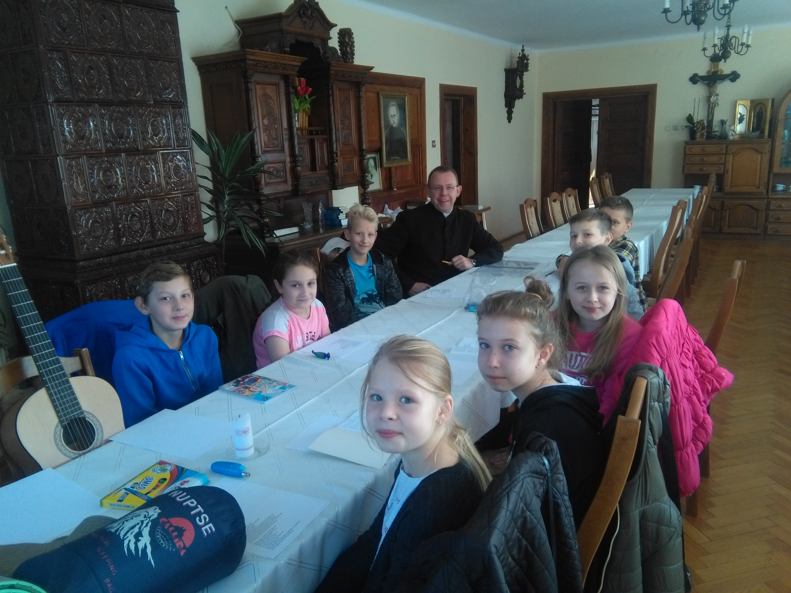
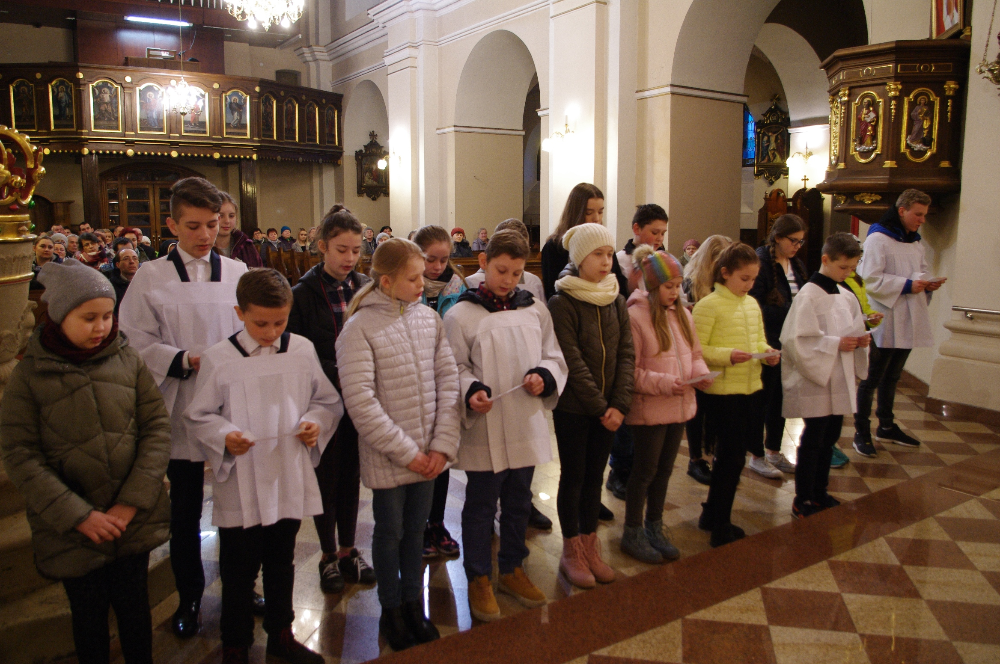
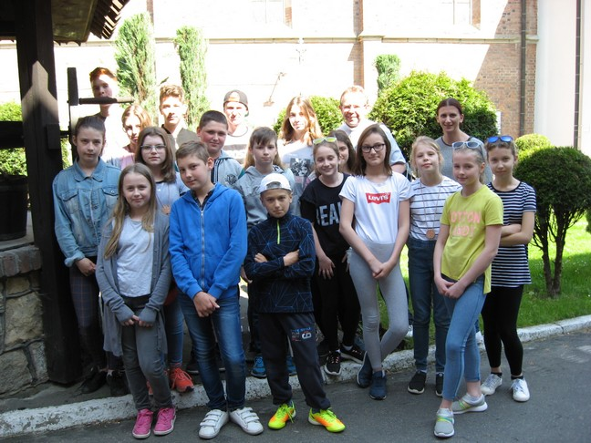
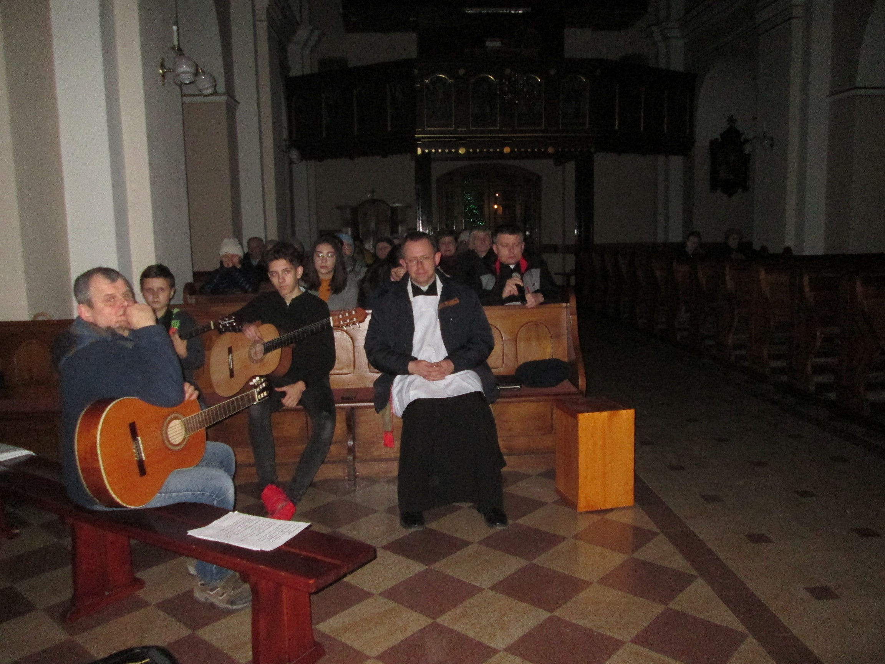
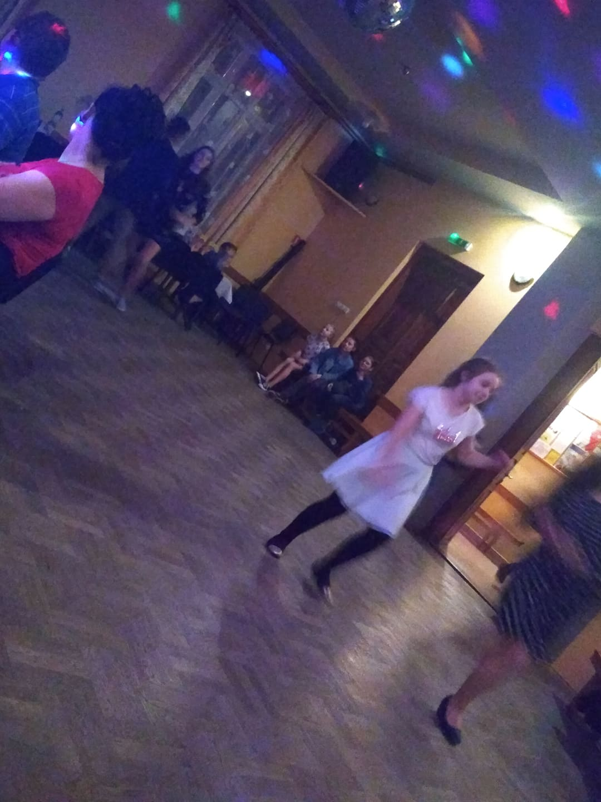
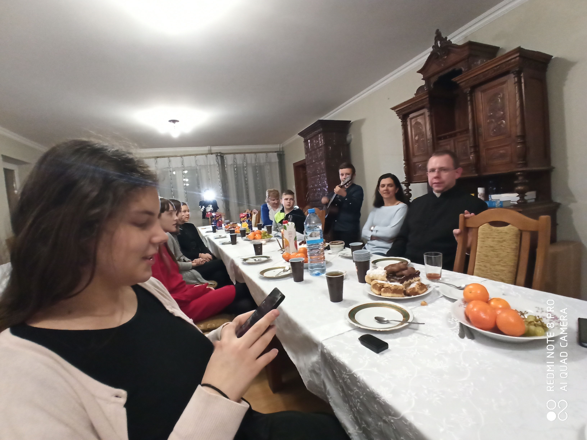
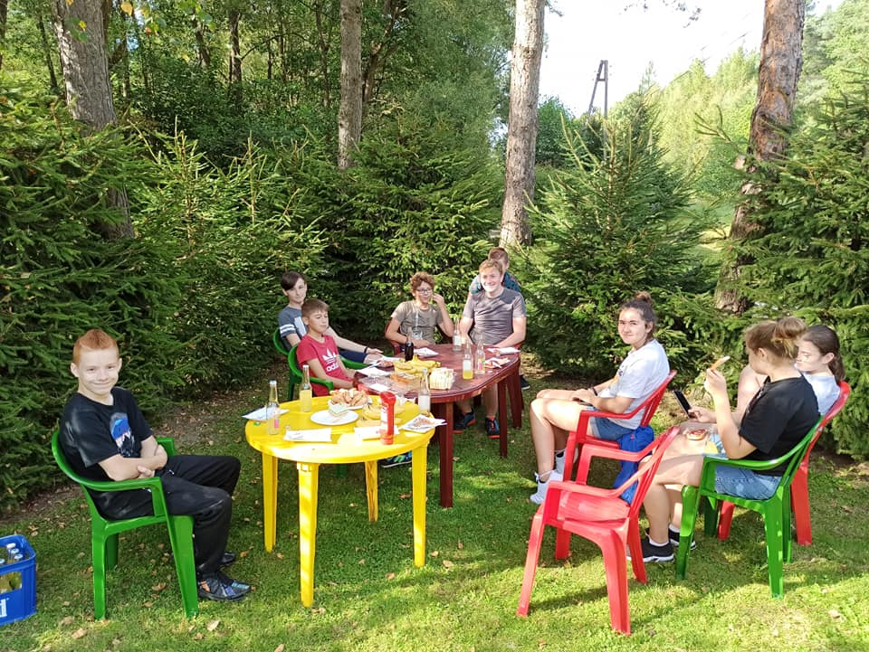

Nasza wspónota
Oaza w parafii Hyżne powstała w październiku 2018 roku. To wtedy grupka młodych ludzi po raz pierwszy spotkała się, by razem odkryć nową drogę ku Chrystusowi. Na początku grupy wiekowe podzielone były na starszych i młodszych. 
 Na początku 2019 roku odbyło się pierwsze foskowanie, czyli oficjalne przyjęcie uczestników do grona członków Ruchu Światło-Życie. Foskowani przyjmując znak Fos-Zoe, oznaczający właśnie światło-życie, pragną być świadkiem Chrystusa będąc wiernym charyzmatowi Oazy.
Latem odbyła się nasza pierwsza wspólna wycieczka do Krosna, Odrzykonia i okolic. Zwiedzaliśmy skansen w Bóbrce, Centrum Dziedzictwa Szkła i Zamek Kamieniec, a także rozpaliliśmy wspólne ognisko. 
 W zimowej scenerii i przy zielonym świetle choinek kościelnych miał miejsce jeden z pierwszych wieczorów uwielbienia prowadzonych przez Oazę.
Rok 2020 rozpoczęliśmy od zabawy sylwestrowej w Gminnym Ośrodku Kultury. Były to niezapomniane chwile w dobrej atmosferze, które na pewno zapamiętamy na długo! 
 Tuż przed wybuchem pandemii zorganizowaliśmy Oazowy Opłatek. Brali w nim udział oazowicze wraz z rodzicami, wspólnie śpiewając kolędy przy pysznym posiłku.
We wrześniu 2021 odbyło się ognisko u p. Stanisława Dziopaka z różnymi atrakcjami, takimi jak strzelanie z wiatrówki, zabawa mini-motorówką oraz łowienie ryb. 
Aktualnie nasze spotkania odbywają się co tydzień w trzech grupach wiekowych podanych w zakładce formacja/formacja w parafii. OND oraz ONŻ spotykają się w piątki wieczorem, zaś ODB w soboty do południa zgodnie z godzinami podanymi w ogłoszeniach parafialnych na stronie hyzne.przemyska.pl. Bardzo serdecznie zapraszamy!